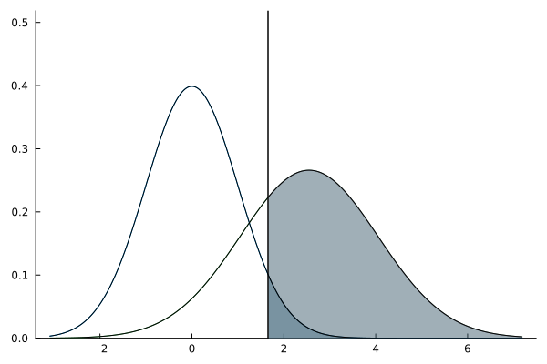
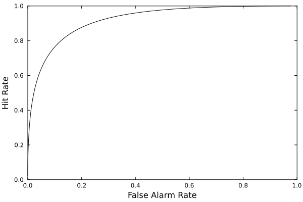
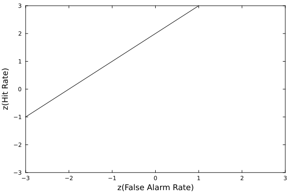
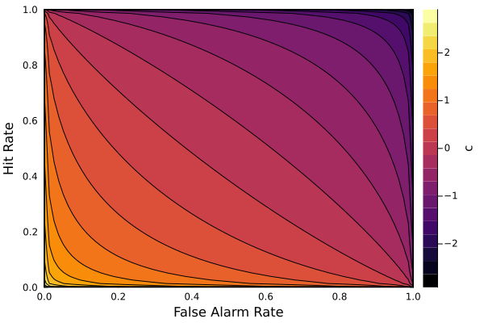
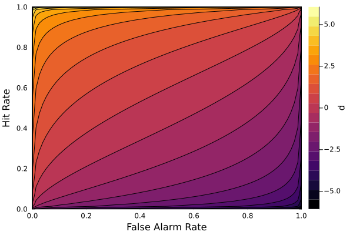

using SignalDetectionModels
model = SDT(; d = 2.0, c = .50, σₛ = 1.5, nₙ = 100)
plot_distributions(model)
using SignalDetectionModels
model = SDT(; d = 2.0, c = 1, σₛ = 1, nₙ = 100)
plot_ROC(model)
using SignalDetectionModels
model = SDT(; d = 2.0, c = 1, σₛ = 1, nₙ = 100)
plot_zROC(model)
using SignalDetectionModels
model = SDT(; d = 2.0, c = 1, σₛ = 1.5, nₙ = 100)
plot_iso_bias(model)
using SignalDetectionModels
model = SDT(; d = 2.0, c = 1, σₛ = 1.5, nₙ = 100)
plot_iso_sensitivity(model)
